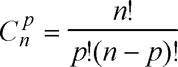

<!DOCTYPE html>
<html>
<body>
<script language="javascript">

function comb(x,y)
{
if(x==y)
{return 1}
else if(y==1)
{return x}
else 
{return (x/y)*comb(x-1,y-1)}
}

do {
x=prompt ("saisir un entier")

}while (isNaN(x)==true||x<0)
x=Number(x)
do {
y=prompt ("saisir un entier")

}while (isNaN(y)==true||y<0)

y=Number(y)

alert(comb(x,y))
</script>

</body>

</html>

<!doctype html > 
<html>
<head>
<meta charset="utf-8" />
<title>Combinaison</title>
<link rel="stylesheet" href="style.css" />
<style>

body {
    font-family: 'Handlee', cursive;
    font-size: 13pt;
    background-color: #efefef;
    padding: 10px;
    margin: 0;

	background-size: cover;
}
h1 {text-align:center; color:white; font-family:verdana;}
spam{color:red;}
</style>
</head>
<body>
<header>  
  <h1 color="white">Mattard<sub class="c2">we just help you to do some quick Maths </sub> </h1>

</header>
<nav class="c1"> 
<ul id="navigation">
 <li> <a href="test1.html">Accueil</a> </li>
 <li> <a href="Arrangement.html">Arrangemet</a> </li>
 <li> <a href="dfp.html">décompostion en facteur premier</a> </li>
 <li> <a href="nombrepremier.html">nombre premier</a> </li>
  <li> <a href="ppcm.html">ppcm</a> </li>
   <li> <a href="pgcd.html">pgcd</a> </li>
   <li> <a href="Puissance.html">puissance</a> </li>
   <li> <a href="Combinaison.html">Combinaison</a></li>
   <li> <a href="fact.html">factorielle</a></li>
</ul>
</nav>  
<hr size="6" color="#3366ff" width="100%">
<br>
<br>


<h1><spam>Combinaison</spam></h1>

<section> 
  <div id="c3">
  <fieldset >
     <legend>Définition</legend>
<p>En mathématiques, lorsqu'on choisit k objets parmi n objets discernables (numérotés de 1 à n) et que l’ordre dans lequel les objets sont placés (ou énumérés) n’a pas d’importance, on peut les représenter par un ensemble à k éléments.
<br>
 Les combinaisons servent donc, entre autres, en combinatoire. Un exemple est la main qu'on obtient en tirant simultanément k cartes dans un jeu de n cartes 
 <br>
 ou au jeu du loto, le tirage final (qui ne dépend pas de l’ordre d’apparition des boules obtenues).</p>
</fieldset>
  <fieldset >
<legend> Exemple</legend>
<a href= "Combinaison1.html"> </a>
<p>
Soit E un ensemble fini de cardinal n et k un entier naturel. Les combinaisons de cet ensemble sont ses sous-ensembles (ou ses parties).
<br>
Une k-combinaison de E (ou k-combinaison sans répétition de E, ou encore combinaison sans répétition de n éléments pris k à k) est une partie à k éléments de E.
<br>
On note P<sub>k</sub>(E)  l’ensemble des k-combinaisons de E.
 <br>
 <h1><span>vous pouver esseyer Combinaison en cliquant sur limage</span></h1>
 </p> 

 


</div>

</p>
</body>
</html>